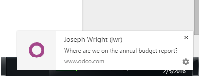

You can mention a user in a channel or chatter by typing @user-name. Mentioning a user in the chatter will set them as a follower of the item (if they are not already) and send a message to their inbox. The item containing the mention will also be bolded in the list view. Mentioning a user in a channel will send a message to their inbox. You cannot mention a user in a channel who is not subscribed to the channel. Typing #channel-name will provide a link to the mentioned channel in either a chatter or another channel.
Direct messaging a user
Direct messages are private messages viewable only by the sender and recipient. You can send direct messages to other users from within the Discuss module by creating a new conversation or selecting an existing one from the sidebar. Direct messages can be sent from anywhere in Odoo using the speech bubble icon in the top bar. The online status of other users is displayed to the left of their name. A green dot indicates that a user is Online, an orange dot that they are Idle, and a grey dot that they are offline.
Desktop notifications from Discuss
You can choose to see desktop notifications when you receive a new direct message. The notification shows you the sender and a brief preview of the message contents. These can be configured or disabled by clicking on the gear icon in the corner of the notification..
